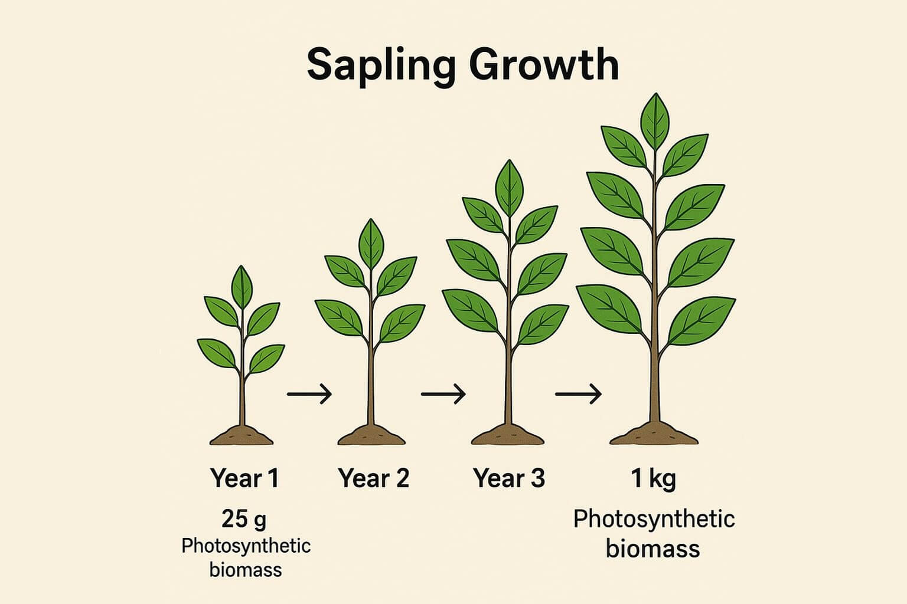

About
The nature of our business : CPES ‘positive externalities’ deposited to the Global Commons
There is no ‘production technology’ that is more efficient than trees and plants to produce primary ecosystem services sucha as Oxygen. But the amount of PES that they provide varies greatly, depending on age, species, and the environment they grow in. While Oceanic Phototrophs produce more 'net Oxygen, terrestrial systems contribute an additional primary ecosystem service , the function of water purification through transpiration - Dr. Ranil Senanayake.
Every tree as it grows eventually reaches a ‘compensation point’, where the accumulation of Photosynthetic Biomass tapers off, net primary productivity ceases, and the tree has enough turn over to respire for maintaining its mature state. EarthRestoration’s methodological approach to validate the first 4 years of growth guarantees that the LifeForce validates net primary productivity.
Tree units we MRV for net primary productivity : View MRV Tree Species List